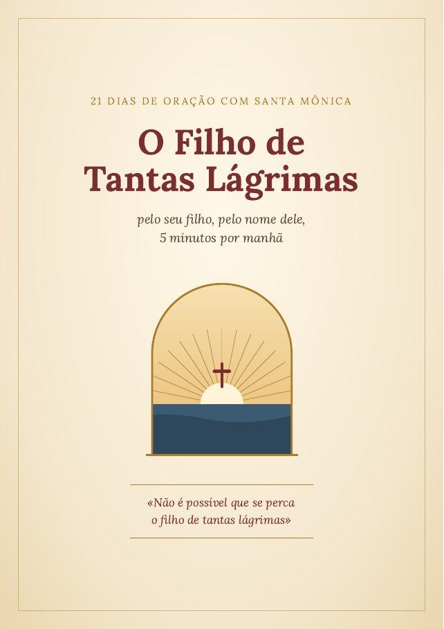

✓
Seu devocional está a caminho 🙏
Em alguns minutos você recebe o acesso ao O Filho de Tantas Lágrimas no seu e-mail e no seu WhatsApp.

Como começar hoje
- Abra o seu WhatsApp ou o seu e-mail e procure a mensagem com o acesso.
- Escolha um horário de manhã, 5 minutos só seus.
- Comece pelo Dia 1: a entrega do seu filho a Deus.